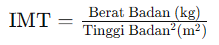

Taukah Kamu?
Apa Itu Indeks Massa Tubuh (IMT)?
Indeks Massa Tubuh (IMT) adalah alat pengukuran yang digunakan untuk menentukan kategorisasi berat badan seseorang berdasarkan tinggi dan berat badannya. Formula yang digunakan untuk menghitung IMT adalah membagi berat badan orang tersebut (dalam kilogram) dengan kuadrat tinggi badannya (dalam meter). Hasil penghitungan ini memberikan angka yang dapat digolongkan dalam berbagai kategori berat badan:
Rumus yang digunakan untuk menghitungnya ialah :

Source: P2PTM Kemenkes RI
Apa Itu Rumus Harris Benedict?
Rumus Harris Benedict adalah metode yang digunakan untuk menghitung Basal Metabolic Rate (BMR), yaitu jumlah kalori yang dibutuhkan tubuh untuk menjalankan fungsi-fungsi vital dalam keadaan istirahat. Formula ini membantu menentukan kebutuhan energi harian berdasarkan umur, jenis kelamin, berat badan, dan tinggi badan.
BMR = 66 + (13,7 × berat badan) + (5 × tinggi badan) – (6,8 × usia)
BMR = 655 + (9,6 × berat badan) + (1,8 × tinggi badan) – (4,7 × usia)
Namun, kebutuhan kalori sehari-hari seseorang akan berbeda berdasarkan tingkat aktivitas fisik dan faktor stres yang mereka alami.
Untuk mendapatkan perkiraan yang lebih akurat mengenai kebutuhan kalori total, hasil BMR harus disesuaikan dengan faktor aktivitas dan stres.
Faktor Aktivitas: Faktor aktivitas digunakan untuk mengakomodasi tingkat aktivitas fisik seseorang dan pengaruhnya terhadap pembakaran kalori.
Berikut adalah beberapa contoh umum faktor aktivitas:
Faktor Stres: Faktor stres diperhitungkan ketika ada kondisi yang meningkatkan kebutuhan energi di luar aktivitas fisik normal, seperti stres fisik atau emosional, penyakit, atau pemulihan dari operasi. Faktor ini dapat meningkatkan BMR:
Apa itu Berat Badan Ideal (BBI)?
Berat Badan Ideal (BBI) adalah suatu estimasi berat badan yang dianggap paling sehat untuk seseorang berdasarkan tinggi badannya.
Formula yang digunakan untuk menghitung BBI adalah mengurangi 100 dari tinggi badan orang tersebut (dalam centimeter),
lalu mengurangi lagi 10% dari hasil pengurangan pertama tersebut. Formula ini memberikan panduan berat badan yang ditujukan untuk
meminimalkan risiko kesehatan yang terkait dengan berat badan yang terlalu rendah atau tinggi.
Formula BBI : BBI = tinggi badan (cm) - 100) - 10% (tinggi badan (cm)- 100)
Source: Buku panduan pengkajian dan perhitungan kebutuhan gizi